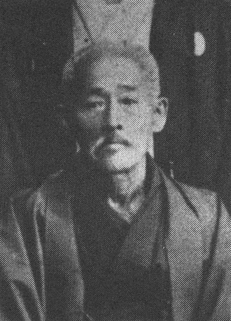
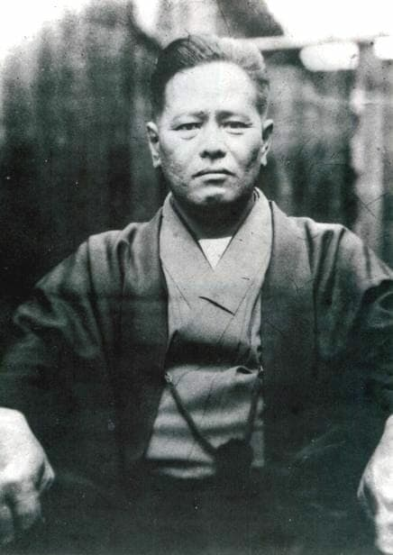
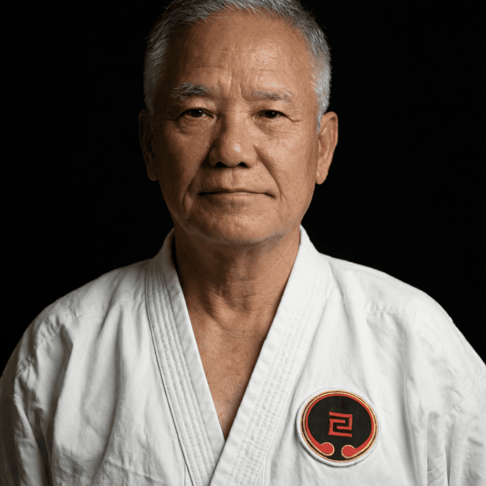
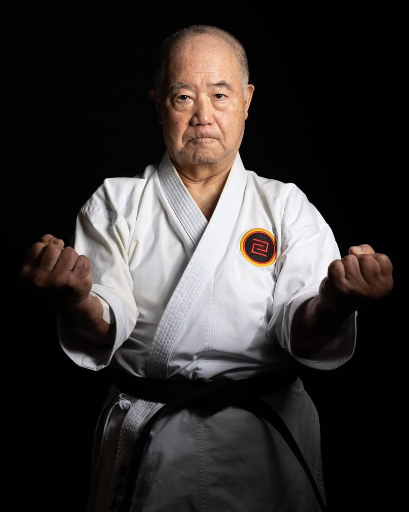
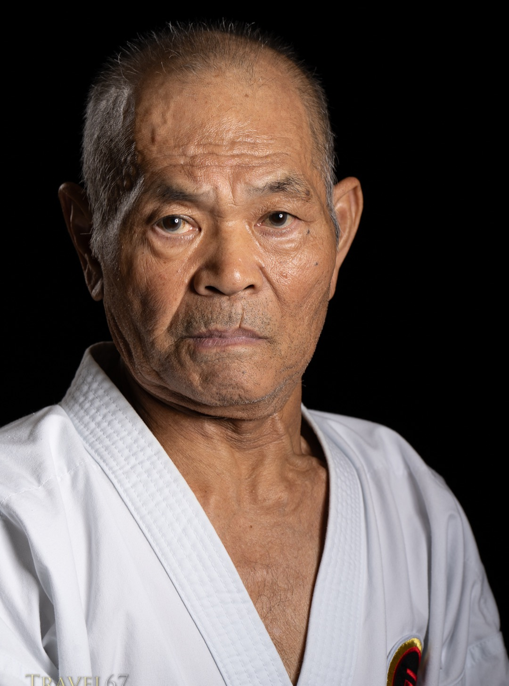
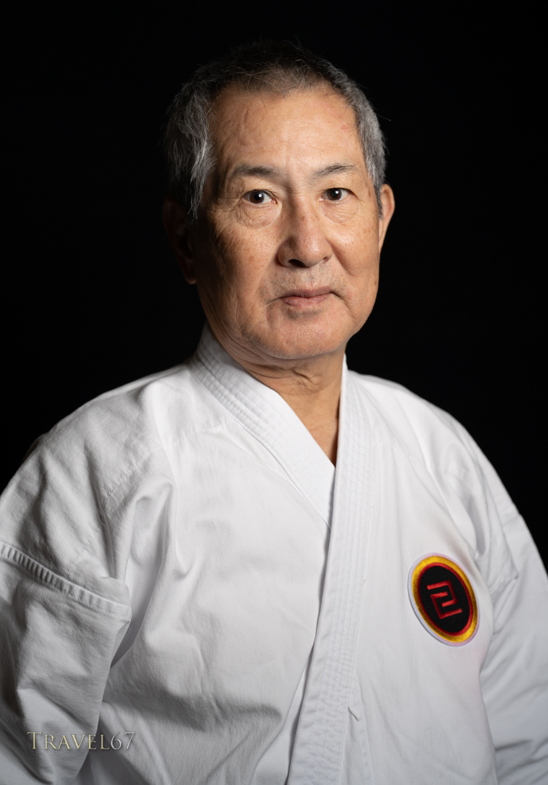
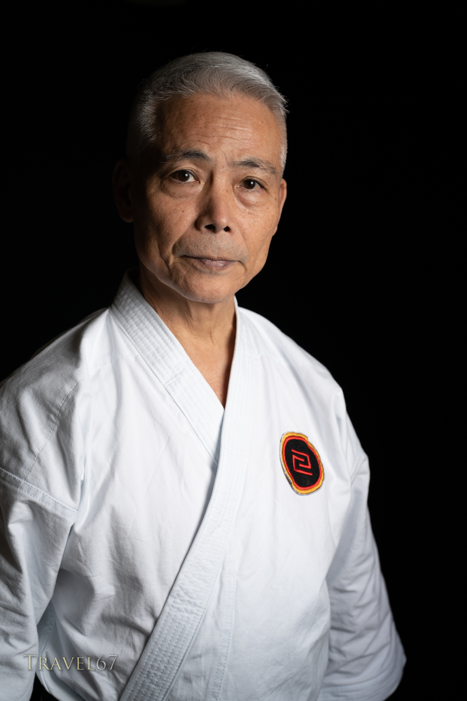
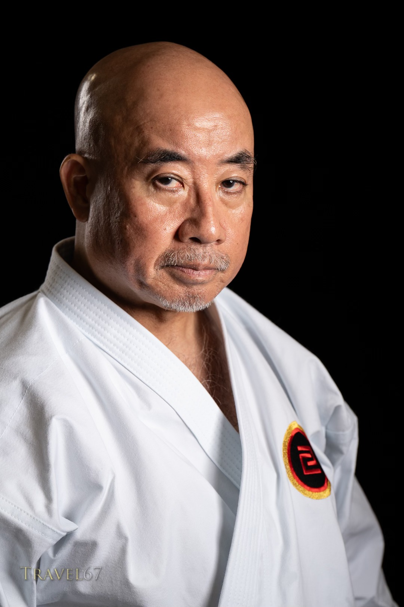

武 The Sacred Lineage 道
A Heritage of Masters Spanning Generations

Kanryo Higaonna
Founder of Naha-Te
1853 - 1915
Chojun Miyagi
Founder of Goju Ryu
1888 - 1953
Anichi Miyagi
Successor to the Art
1931 - 2009
Morio Higaonna
Founder of TOGKF & World Chief Instructor
10th Dan
Kazuo Terauchi
Sensei - 10th Dan

Yonekazu Uehara
Sensei - 8th Dan

Masakazu Kuramoto
Sensei - 8th Dan

Yoshinori Yonesato
Sensei - 8th Dan

M Vijaya Kumar
Sensei - 4th Dan
TOGKF IndiaPhilosophy
Goju Ryu means "Hard-Soft Style". It reflects the duality of nature and life. The training is rigorous, designed to forge a strong body and an indomitable spirit.
"Karate Ni Sente Nashi" - There is no first attack in Karate.
This principle guides our practice, emphasizing self-defense and the cultivation of a peaceful character.
Mission in India
TOGKF India is dedicated to spreading the authentic teachings of Higaonna Sensei throughout the country. It was founded by Sensei M. Vijay Kumar, fulfilling his lifelong dream to train under the legendary Shihan Morio Higaonna. In 2023, he realized this goal by joining TOGKF, ensuring the preservation of the essence of Okinawan Goju Ryu for future generations.